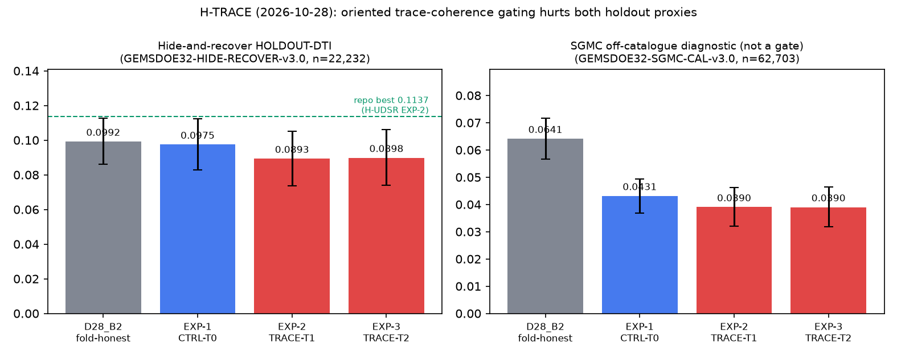

← Main decision desk · Submission guide · Executive summary (Markdown)
There is no approved submission. The historical H-TRACE record reports a distinct byte hash, but it failed the holdout and literal uniqueness gates. The holdout was not independently replayed in this review; the template is an unauthenticated owner mirror. Local format checks are not submission authorization.
H-TRACE (2026-10-28): oriented trace-coherence emission — research record
Lane (pre-registered in knowledge/preregistration_trace_20261028.md): reshape the reported H-UDSR Dual-Cover OOF posterior by km-scale oriented trace coherence (1.5 km + 3.1 km, 8 orientations), then emit with the shared exact-gain axial-crest emitter outside a 2 px catalogue collar. Named non-fault mimics: roads/rail embankments, Lake Lahontan shoreline benches, GeoDAWN flight-line stripes.

Prior reported results (HOLDOUT-DTI, shared evaluator)
These prior results were not independently replayed here. The pinned evaluator has known scoring limitations; 22,232 withheld positives are pooled instances, not necessarily distinct segments.
- EXP-1 CTRL-T0 (posterior alone): HOLDOUT-DTI 0.0975 [0.0828, 0.1122] (
GEMSDOE32-HIDE-RECOVER-v3.0, 22,232 withheld positives, 140 spatial clusters) vs fold-honest D28_B2 0.0992 [0.0860, 0.1127] (paired Δ −0.0017, CI includes 0). SGMC diagnostic 0.0431 vs B2 0.0641. - EXP-2 TRACE-T1 (emitted artifact): 0.0893 [0.0737, 0.1052]; paired Δ vs its own control −0.0082 [−0.0112, −0.0051] — the trace gate significantly hurts. SGMC diagnostic 0.0390.
- EXP-3 TRACE-T2 (hysteresis support): 0.0898 [0.0740, 0.1061]; SGMC diagnostic 0.0390.
- None beats the prior reported H-UDSR EXP-2 HOLDOUT-DTI of 0.1137 [0.1013, 0.1267] (same v3.0 evaluator and 22,232 instances). That run was not independently replayed here. Gate G2: FAIL for all three.
Uniqueness, canary, format (automated, no human inspection)
- Surface |Spearman| vs 498 measurable extended-registry rasters (500 fetched 2026-10-28; 2 malformed, see run card): max 0.1293 ≤ 0.90 — below threshold in this incomplete prior sample, not an all-registry pass (pre-placement).
- Final dots within 3 px: worst sparse registry raster 86.26% > 70% and this repo's AP2 79.45% > 70% — FAIL. Literal lattice overlap 99.86% (mathematically ≥ 70.37% at this dot count).
- Leakage canary (label-free trace fields, single-feature oriented AUC vs withheld positives): worst 0.5733 ≤ 0.90 for the reported trace-field subset; not proof that every model input was tested.
- Saved bytes: single-band float32 GeoTIFF, EPSG:32611, 3730×3292, finite [0,1] (
-zeroswhole-array;-nantwin has NaN only outside the footprint, per the official format text). Grid is checked against an owner mirror, not an organizer-authenticated template; portal acceptance is unknown.
Research artifact (literal uniqueness failed — DO NOT SUBMIT)
Download H-TRACE TIFF · RESEARCH ONLY · ZIP · 22,438 dots · SHA-256 32716d4851e9de2df406eeb2386c8ddcf9aa970c985643c7e5484973dd023b4f
Historical filename: apartgemsdoe2-trace-exp-2-trace-t1-22438dots-20261028T063240Z-71a21036-zeros
Archived description (not an upload instruction; 110 chars): ApartGEMSDOE2 H-TRACE EXP-2: oriented 1.5/3.1km trace-coherence gate on DualCover OOF posterior, 22438 dots B2
Evidence: three-experiment ledger · run card JSON · why 0.2778 leads, and what beating it requires. No leaderboard estimate is available for any new file: no calibrated mapping from catalogue hide-and-recover to the expert-hidden test set exists.